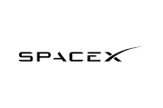
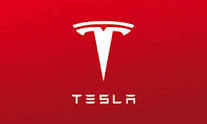

Elon Musk
1930-2023
tony stark of real world
-
Elon Musk is a business magnate, investor, and entrepreneur who has gained global recognition for his groundbreaking contributions to the fields of technology, space exploration, and renewable energy. He was born on June 28, 1971, in Pretoria, South Africa, and has since become one of the most influential figures in the business world.
-
Musk's entrepreneurial journey began in the 1990s when he co-founded Zip2, a web software company that provided online business directories and maps. In 1999, Compaq acquired Zip2 for nearly $300 million, and Musk used his share of the proceeds to launch X.com, an online payment company that eventually became PayPal. PayPal was sold to eBay in 2002 for $1.5 billion, and Musk became a millionaire at the age of 31.
-
After the sale of PayPal, Musk turned his attention to space exploration and founded SpaceX in 2002 with the goal of reducing the cost of space travel and eventually colonizing Mars. Under Musk's leadership, SpaceX has achieved a number of milestones, including becoming the first privately funded company to send a spacecraft to the International Space Station (ISS) and the first to successfully land a reusable rocket.
-
Musk has also been heavily involved in the electric vehicle industry, co-founding Tesla Motors in 2003 with the goal of accelerating the transition to sustainable transportation. Tesla has since become one of the most valuable car companies in the world and has revolutionized the electric vehicle market with its innovative designs and advanced technology.
-
In addition to SpaceX and Tesla, Musk has also founded other companies, including The Boring Company, which aims to reduce traffic congestion through the construction of underground tunnels, and Neuralink, which is focused on developing advanced brain-machine interfaces.
-
Despite his many successes, Musk has also faced criticism and controversy over the years, including his public statements about COVID-19 and his handling of labor issues at his companies.
-
Overall, Elon Musk is a visionary entrepreneur who has made significant contributions to a wide range of industries and has become a prominent figure in popular culture. His innovations in technology and commitment to sustainable energy have inspired many and are likely to shape the future of our world.
biography
- elon musk life
- elon musk history
- elon musk thinking
- elon musk hated
- elon musk success story
- elon musk hard work
company owned by elon musk
Elon Musk is a well-known entrepreneur and businessman who has founded or co-founded several companies. Here are some of the companies owned by Elon Musk:
-
Spacex
SpaceX is a private aerospace company founded by Elon Musk in 2002 with the goal of revolutionizing space travel and exploration. The company has made significant progress in the development of reusable rockets and spacecraft, reducing the cost of spaceflight and increasing access to space.
One of SpaceX's primary goals is to make space exploration more accessible to people around the world. The company has made several landmark achievements, including launching the first privately funded liquid-fueled rocket to reach orbit, docking with the International Space Station (ISS), and launching the first crewed commercial spacecraft to the ISS.
-

Tesla
Tesla, Inc. is an American electric vehicle and clean energy company founded by entrepreneur Elon Musk in 2003. Tesla's mission is to accelerate the transition to sustainable energy by designing and manufacturing high-performance electric cars, solar panels, and energy storage systems.
One of Tesla's key achievements has been the development of electric cars that are both high-performance and environmentally friendly. The company's electric vehicles, including the Model S, Model X, Model 3, Model Y, and Cybertruck, offer impressive acceleration, long range, and low environmental impact compared to traditional gasoline-powered cars.